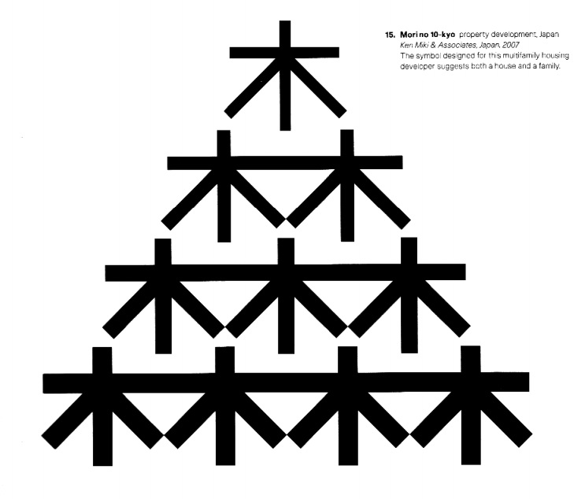

1. I feel that the essay began to touch on it, but what is the impact of the design of national flags? There is a field of study dedicated to the history, symoblism, and use of flags called vexillology, but it does not restrict itself to just flags of countries. Although they will most certainly be tremendous variation, how exatly were national flags designed into these symbols that wield enormous power over citizens of nations?
2. Although not a symobol or a logo in the strictest sense of the word, I feel that a similar analysis regarding the development and impact of fonts could be made. How were the ubiquitous fonts like Times New Roman designed and developed? And what influences has it had on reading, writing, and computing?
(*)The last symbol in the essay caught my eye, because it was a collection of Japanese characters. According to the snippet, it's a "symbol designed for [a] multifamily housing developer" and is intended to "suggest both a house and a family." The design gets even more interesting though, since it uses the Japanese character for tree (木), which represents the building block of houses, and places ten of them in a triangular formation to form multiple versions of the somewhat more complicated character for forest (森), which is just three "trees" in a triangle. The name of the design "Morino 10-kyo" is also layered with meaning, as mori means forest, no is a modifier particle, and 10 can be read as to to "spell" out To-kyo.
